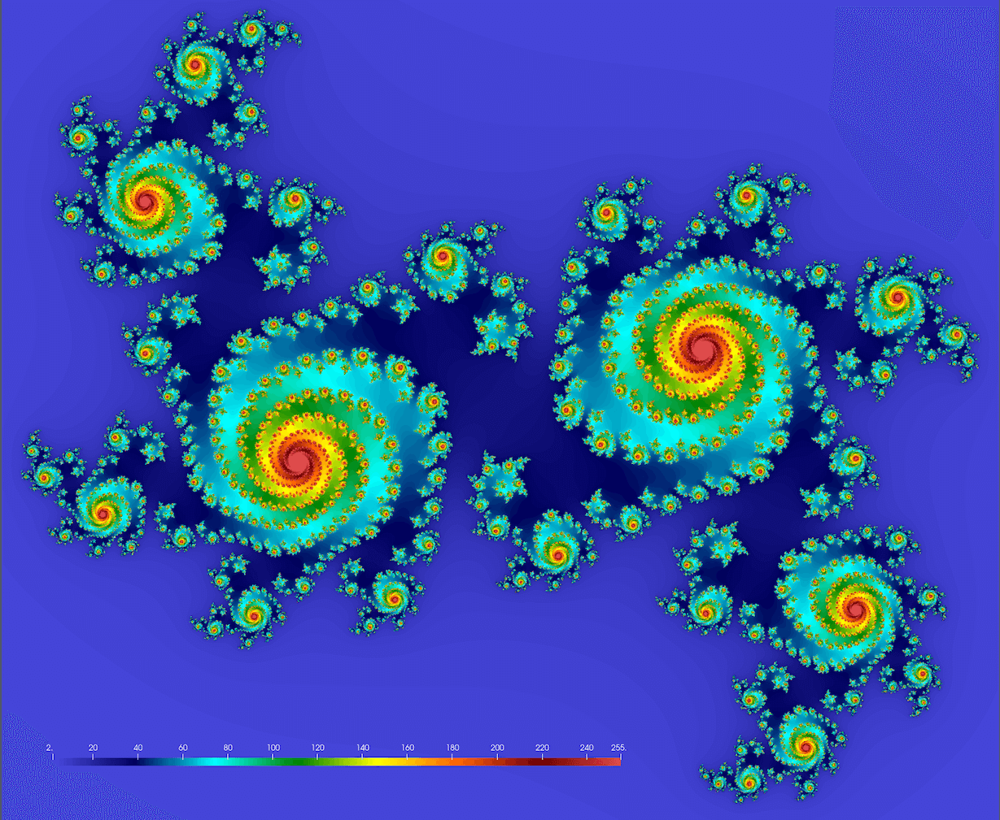

GPU computing with Chapel
June 4th, 1:30pm-4:30pm Pacific Time
Chapel was designed as a parallel-first programming language targeting any hardware that supports parallel execution: multicore processors, multiple nodes in an HPC cluster, and now also GPUs on HPC systems. This is very different from the traditional approach to parallel programming in which you would use a dedicated tool for each level of hardware parallelism, e.g. MPI, or OpenMP, or CUDA, etc.
Later in this workshop I will show a compact Chapel code that uses multiple nodes on a cluster, multiple GPUs on each node, and automatically utilizes all available (in our Slum job) CPU cores on each node, while copying the data as needed between all these hardware layers. But let’s start with the basics!
Running GPU Chapel on the Alliance systems
In general, you need to configure and compile Chapel for your specific GPU type and your specific cluster interconnect. For NVIDIA and AMD GPUs (the only ones currently supported), you must use LLVM as the backend compiler. With NVIDIA GPUs, you must build LLVM to use LLVM’s NVPTX backend to support GPU programming, so usually you cannot use the system-provided LLVM module – instead you should set CHPL_LLVM=bundled during Chapel compilation.
As of this writing, on the Alliance systems, you can use GPUs from Chapel on the following systems:
- native multi-locale on Fir, Rorqual, Narval; the binaries might not be in place everywhere, so please get in touch if you want to run it on a specific system
- native single-locale on Nibi
- on an Arbutus VM in a project with access to vGPUs (our plan for today)
- via a single-locale GPU Chapel container on any Alliance system (clusters, cloud) with NVIDIA GPUs; let me know if you would like to access this container
Efforts are underway to compile native Chapel 2.2 as a series of modules on all Alliance systems, but that might take a while.
Running GPU Chapel on your computer
If you run Linux and have an NVIDIA GPU on your computer and all the right GPU drivers and CUDA installed, it should be fairly straightforward to compile Chapel with GPU support. Here is what worked for me in AlmaLinux 9.4. Please let me know if these steps do not work for you.
In Windows, Chapel with GPU support works under the Windows Subsystem for Linux (WSL) as explained in this post. You could also run Chapel inside a Docker container, although you need to find a GPU-enabled Docker image.
MacOS on Apple Silicon does not officially support NVIDIA and AMD GPUs, however:
- some limited support on older Intel Macs for PCIe-based acceleration over Thunderbolt
- some recent exceptions for third-party drivers for NVIDIA cards from TinyCorp for AI/LLM workloads
- for code development and debugging on MacOS you can emulate GPUs, running any GPU Chapel code in the CPU-as-device mode
- on instructor’s laptop:
source ~/Documents/syncHPC/startSingleLocaleCPUasDevice.sh
- on instructor’s laptop:
Today’s setup
Today’s we’ll run Chapel on the virtual training cluster. We’ll now distribute the usernames and passwords – let’s try to log in.
There are two Chapel configurations we could use today.
- Chapel with GPU support compiled for NVIDIA cards. On the training cluster we have 10 GPU nodes, and on each node one A100 GPU is split into three “2g.10gb” MIGs, for the total of 30 slices that you can schedule with Slurm. To load this version of Chapel, run:
source /project/def-sponsor00/shared/fixModules.sh
source /project/def-sponsor00/shared/syncHPC/startSingleLocaleGPU.sh- We could also run Chapel GPU code in the so-called ‘CPU-as-device’ mode that emulates a GPU on a CPU. This is very handy for debugging a Chapel GPU code on a computer without a dedicated GPU and/or vendor SDK installed. You can find more details on this mode here. Since we have enough physical GPUs today, I did not enable this mode.
So how do you actually run code on GPU nodes? On the training cluster, to keep resources from sitting idle, GPU nodes are created on demand: they spin up when a job starts and shut down soon after it finishes. Bringing a node online usually takes around 3-4 minutes.
We can adopt one of three workflows:
- use a long interactive job
- pro: code starts right away, output goes into the terminal
- con: you often sit on allocated resources even when you are not actively using them
salloc --time=2:0:0 --mem=3600 --gpus-per-node=2g.10gb:1
chpl --fast test.chpl
./test- submit short batch jobs
- pro: efficient use of resources
- con: output goes to a file
#!/bin/bash
#SBATCH --time=00:05:00
#SBATCH --mem=3600
#SBATCH --gpus-per-node=2g.10gb:1
./testchpl --fast test.chpl
sbatch submit.sh- submit short interactive jobs
- pro: efficient use of resources, output goes into the terminal
chpl --fast test.chpl
srun --mem-per-cpu=3600 --gpus-per-node=2g.10gb:1 ./testUseful built-in variables
From inside your Chapel code, you can access the following predefined variables:
Localesis the list of locales (nodes) that your code can run on (invoked in code execution)numLocalesis the number of these localeshereis the current locale (node), and by extension current CPUhere.nameis its namehere.maxTaskParis the number of CPU cores on this localehere.gpusis the list of available GPUs on this locale (sometimes called “sublocales”)here.gpus.sizeis the number of available GPUs on this localehere.gpus[0]is the first GPU on this locale
Let’s try some of these out; store this code as test.chpl:
writeln("Locales: ", Locales);
writeln("on ", here.name, " I see ", here.gpus.size, " GPUs");
writeln("and their names are: ", here.gpus);chpl --fast test.chpl
./testLocales: LOCALE0
on cdr2514.int.cedar.computecanada.ca I see 1 GPUs
and their names are: LOCALE0-GPU0There is one GPU (even in ‘CPU-as-device’ mode), and it is available to us as the first (and only) element of the array here.gpus.
Our first GPU code
To benefit from GPU acceleration, you want to run a computation that can be broken into many independent identical pieces. An obvious example is a for loop in which each loop iteration does not depend on other iterations. Let’s run such an example on the GPU:
config const n = 10;
on here.gpus[0] {
var A: [1..n] int; // kernel launch to initialize an array
foreach i in 1..n do // thread parallelism on a CPU or a GPU => kernel launch
A[i] = i**2;
writeln("A = ", A); // copy A to host
}A = 1 4 9 16 25 36 49 64 81 100- the array
Ais stored on the GPU - order-independent loops will be executed in parallel on the GPU
- if instead of parallel
foreachwe use serialfor, the loop will run on the CPU - in our case the array
Ais both stored and computed on the GPU in parallel - currently, to be computed on a GPU, an array must be stored on that GPU
- in general, when you run a code block on the device, parallel lines inside will launch kernels
Alternative syntax
We can modify this code so that it runs on a GPU if present; otherwise, it will run on the CPU:
var operateOn =
if here.gpus.size > 0 then here.gpus[0] // use the first GPU
else here; // use the CPU
writeln("operateOn: ", operateOn);
config const n = 10;
on operateOn {
var A: [1..n] int;
foreach i in 1..n do
A[i] = i**2;
writeln("A = ", A);
}Of course, in ‘CPU-as-device’ mode this code will always run on the CPU.
You can also force a GPU check by hand:
if here.gpus.size == 0 {
writeln("need a GPU ...");
exit(1);
}
operateOn = here.gpus[0];GPU diagnostics
Wrap our code into the following lines:
use GpuDiagnostics;
startGpuDiagnostics();
...
stopGpuDiagnostics();
writeln(getGpuDiagnostics());operateOn: LOCALE0-GPU0
A = 1 4 9 16 25 36 49 64 81 100
(kernel_launch = 2, host_to_device = 0, device_to_host = 10, device_to_device = 0)
in 'CPU-as-device' mode: (kernel_launch = 2, host_to_device = 0, device_to_host = 0, device_to_device = 0)Let’s break down the events:
- we have two kernel launches
var A: [1..n] int; // kernel launch to initialize an array
foreach i in 1..n do // kernel launch to run a loop in parallel
A[i] = i**2;- we copy 10 array elements device-to-host to print them (not shown in ‘CPU-as-device’ mode)
writeln("A = ", A);- no other data transfer
Let’s take a look at the example from https://chapel-lang.org/blog/posts/intro-to-gpus. They define a function:
use GpuDiagnostics;
proc numKernelLaunches() {
stopGpuDiagnostics(); // assuming you were running one before
var result = getGpuDiagnostics().kernel_launch;
resetGpuDiagnostics();
startGpuDiagnostics(); // restart diagnostics
return result;
}which can then be applied to these 3 examples (all in one on here.gpus[0] block):
startGpuDiagnostics();
on here.gpus[0] {
var E = 2 * [1,2,3,4,5]; // one kernel launch to initialize the array
writeln(E);
assert(numKernelLaunches() == 1);
use Math;
const n = 10;
var A = [i in 0..#n] sin(2 * pi * i / n); // one kernel launch
writeln(A);
assert(numKernelLaunches() == 1);
var rows, cols = 1..5;
var Square: [rows, cols] int; // one kernel launch
foreach (r, c) in Square.indices do // one kernel launch
Square[r, c] = r * 10 + c;
writeln(Square);
assert(numKernelLaunches() == 2); // 2 on GPU and 7 on CPU-as-device
}On CPU-as-device we have 7 kernel launches in the last block. My initial interpretation: one launch to initialize Square + one launch to access Square.indices + one launch per loop iteration, but it’s actually not entirely correct …
Let’s play with this in the CPU-as-device mode! Make the upper limit of rows, cols a config variable, recompile, and play with the array size.
Verifying if a loop can run on a GPU
The loop attribute @assertOnGpu (applied to a loop) does two things:
- at compilation, will fail to compile a code that cannot run on a GPU and will tell you why
- at runtime, will halt execution if called from outside a GPU
Consider the following serial code:
config const n = 10;
on here.gpus[0] {
var A: [1..n] int;
for i in 1..n do
A[i] = i**2;
writeln("A = ", A);
}A = 1 4 9 16 25 36 49 64 81 100This code compiles fine (chpl --fast test.chpl), and it appears to run fine, printing the array. But it does not run on the GPU! Let’s mark the for loop with @assertOnGpu and try to compile it again. Now we get:
error: loop marked with @assertOnGpu, but 'for' loops don't support GPU executionSerial for loops cannot run on a GPU! Without @assertOnGpu the code compiled for and ran on the CPU. To port this code to the GPU, replace for with either foreach or forall (both are parallel loops), and it should compile with @assertOnGpu.
When running in ‘CPU-as-device’ mode, @assertOnGpu attribute will produce a warning “ignored with CHPL_GPU=cpu”.
Alternatively, you can count kernel launches – it’ll be zero for the for loop.
More on @assertOnGpu and other attributes at https://chapel-lang.org/docs/main/modules/standard/GPU.html.
Starting with Chapel 2.2, there is an additional attribute @gpu.assertEligible that asserts that a statement is suitable for GPU execution (same as @assertOnGpu), without requiring it to be executed on a GPU. This is perfect in the ‘CPU-as-device’ mode: fails to compile a for loop, but no warnings at runtime.
Timing on the CPU
Let’s pack our computation into a function, so that we can call it from both a CPU and a GPU. For timing, we can use a stopwatch from the Time module:
use Time;
config const n = 10;
var watch: stopwatch;
proc squares(device) {
on device {
var A: [1..n] int;
foreach i in 1..n do
A[i] = i**2;
writeln("A = ", A[n-2..n]); // last 3 elements
}
}
writeln("--- on CPU:"); watch.start();
squares(here);
watch.stop(); writeln('It took ', watch.elapsed(), ' seconds');
watch.clear();
writeln("--- on GPU:"); watch.start();
squares(here.gpus[0]);
watch.stop(); writeln('It took ', watch.elapsed(), ' seconds');$ chpl --fast test.chpl
$ ./test --n=100_000_000
--- on CPU:
A = 9999999600000004 9999999800000001 10000000000000000
It took 7.94598 seconds
--- on GPU:
A = 9999999600000004 9999999800000001 10000000000000000
It took 0.003673 secondsYou can also call start and stop functions from inside the on device block – they will still run on the CPU. We will see an example of this later in this workshop.
Timing on the GPU
Obtaining timing from within a running CUDA kernel is tricky as you are running potentially thousands of simultaneous threads that can finish at different times, so measuring the wallclock time per thread might not be very meaningful. However, you can measure GPU clock cycles spent on a partucular part of the kernel function. The GPU module provides a function gpuClock() that returns the clock cycle counter (per multiprocessor), and it needs to be called to time code blocks within a GPU-enabled loop.
Here is a simple example (modelled after measureGpuCycles.chpl) to demonstrate its use. In this example, we have a parallel loop with n=10 iterations, each likely launching a large array of threads, all running at the same time. We count the number of GPU clock cycles per each iteration.
Do not run this code in the ‘CPU-as-device’ mode, as its output will not be particularly meaningful: you need a physical GPU to see actual counts.
use GPU, Math;
config const n = 10, size = 100;
on here.gpus[0] {
var A: [1..n] real;
var clockDiff: [1..n] uint;
@assertOnGpu foreach i in 1..n {
var start, stop: uint;
start = gpuClock();
for j in 0..<size do
A[i] += log10((i+j+1): real);
stop = gpuClock();
clockDiff[i] = stop - start;
}
writeln("Cycle count = ", clockDiff);
writeln("Time = ", (clockDiff[1]: real) / (gpuClocksPerSec(0): real), " seconds");
writeln("A = ", A);
}$ ./test
Cycle count = 29216 29216 29216 29216 29216 29216 29216 29216 29216 29216
Time = 0.0207206 seconds
A = 159.974 161.682 163.218 164.633 165.955 167.202 168.386 169.517 170.6 171.641
$ ./test --size=1000
Cycle count = 286633 286633 286633 286633 286633 286633 286633 286633 286633 286633
Time = 0.203286 seconds
A = 2570.61 2573.3 2575.83 2578.23 2580.53 2582.76 2584.91 2587.01 2589.06 2591.07
$ ./test --size=10_000
Cycle count = 2860616 2860616 2860616 2860616 2860616 2860616 2860616 2860616 2860616 2860616
Time = 2.02881 seconds
A = 35663.5 35667.2 35670.7 35674.1 35677.4 35680.6 35683.8 35686.9 35689.9 35692.9There runtimes are suspiciously large, by ~1000X …
If for the same problem we move the timing to the CPU:
use Time, Math;
config const n = 10, size = 100;
var watch: stopwatch;
on here.gpus[0] {
var A: [1..n] real;
watch.start();
@assertOnGpu foreach i in 1..n {
var start, stop: uint;
for j in 0..<size do
A[i] += log10((i+j+1): real);
}
watch.stop();
writeln('It took ', watch.elapsed(), ' seconds');
writeln("A = ", A);
}$ ./test
It took 0.000149 seconds
A = 159.974 161.682 163.218 164.633 165.955 167.202 168.386 169.517 170.6 171.641
$ ./test --size=1000
It took 0.000375 seconds
A = 2570.61 2573.3 2575.83 2578.23 2580.53 2582.76 2584.91 2587.01 2589.06 2591.07
$ ./test --size=10_000
It took 0.002747 seconds
A = 35663.5 35667.2 35670.7 35674.1 35677.4 35680.6 35683.8 35686.9 35689.9 35692.9We get the same numerical results, but these runtimes make more sense, so it appears that gpuClocksPerSec(devNumber) actually measures the number of GPU clock cycles per millisecond.
Prime factorization of each element of a large array
Now let’s compute a more interesting problem where we do some significant processing of each element, but independently of other elements – this will port nicely to a GPU.
Prime factorization of an integer number is finding all its prime factors. For example, the prime factors of 60 are 2, 2, 3, and 5. Let’s write a function that takes an integer number and returns the sum of all its prime factors. For example, for 60 it will return 2+2+3+5 = 12, for 91 it will return 7+13 = 20, for 101 it will return 101, and so on.
proc primeFactorizationSum(n: int): int {
var num = n, total = 0;
while num % 2 == 0 {
total += 2;
num /= 2;
}
var divisor = 3;
while divisor * divisor <= num {
while num % divisor == 0 {
total += divisor;
num /= divisor;
}
divisor += 2;
}
if num > 2 then
total += num;
return total;
}We can test it quickly:
writeln(primeFactorizationSum(60));
writeln(primeFactorizationSum(91));
writeln(primeFactorizationSum(101));
writeln(primeFactorizationSum(100_000_000));Since 1 has no prime factors, we will start computing from 2, and then will apply this function to all integers in the range 2..n, where n is a larger number. We will do all computations separately from scratch for each number, i.e. we will not cache our results (caching can significantly speed up our calculations but the point here is to focus on brute-force computing).
With the procedure primeFactorizationSum defined, here is the CPU version primesSerial.chpl:
config const n = 10;
var A: [2..n] int;
for i in 2..n do
A[i] = primeFactorizationSum(i);
var lastFewDigits =
if n > 5 then n-4..n // last 5 digits
else 2..n; // or fewer
writeln("A = ", A[lastFewDigits]);Here is the GPU version primesGPU.chpl:
config const n = 10;
on here.gpus[0] {
var A: [2..n] int;
@gpu.assertEligible foreach i in 2..n do
A[i] = primeFactorizationSum(i);
var lastFewDigits =
if n > 5 then n-4..n // last 5 digits
else 2..n; // or fewer
writeln("A = ", A[lastFewDigits]);
}chpl --fast primesSerial.chpl
./primesSerial --n=10_000_000
chpl --fast primesGPU.chpl
./primesGPU --n=10_000_000In both cases we should see the same output:
A = 4561 1428578 5000001 4894 49Let’s add timing to both codes:
use Time;
var watch: stopwatch;
...
watch.start();
...
watch.stop(); writeln('It took ', watch.elapsed(), ' seconds');Note that this problem does not scale linearly with n, as with larger numbers you will get more primes. Here are my timings on Cedar’s V100 GPU:
| n | CPU time in sec | GPU time in sec | speedup factor |
|---|---|---|---|
| 1_000_000 | 3.04051 | 0.001649 | 1844 |
| 10_000_000 | 92.8213 | 0.042215 | 2199 |
| 100_000_000 | 2857.04 | 1.13168 | 2525 |
and on Fir’s full H100-80GB-HBM3 GPUs:
| n | CPU time in sec | GPU time in sec | speedup factor |
|---|---|---|---|
| 1_000_000 | 0.5330 | 0.000717 | 743 |
| 10_000_000 | 16.49 | 0.017904 | 921 |
| 100_000_000 | 516.8 | 0.545646 | 947 |
Finer control
There are various settings that you can fine-tune via attributes for maximum performance, e.g. you can change the number of threads per block (default 512, should be a multiple of 32) when launching kernels:
@gpu.blockSize(64) foreach i in 1..128 { ...}You can also change the default when compiling Chapel via CHPL_GPU_BLOCK_SIZE variable, or when compiling Chapel codes by passing the flag --gpu-block-size=<block_size> to Chapel compiler
Another setting to play with is the number of iterations per thread:
@gpu.itersPerThread(4) foreach i in 1..128 { ... }This setting is probably specific to your computational problem. For these and other per-kernel attributes, please see this page.
Multiple locales / GPUs
If we have access to multiple locales and then multiple GPUs on each of those locales, we would utilize all this processing power through two nested loops, first cycling through all locales and then through all available GPUs on each locale:
coforall loc in Locales do
on loc {
writeln("on ", loc.name, " I see ", loc.gpus.size, " GPUs");
coforall gpu in loc.gpus {
on gpu {
... do some work in parallel ...
}
}
}Here we assume that we are running inside a multi-node job on the cluster, e.g.
salloc --time=1:0:0 --nodes=3 --mem-per-cpu=3600 --gpus-per-node=2
chpl --fast multiple.chpl
./multiple -nl 3How would we use this approach in practice? Let’s consider our primes factorization problem. Suppose we want to collect the results on one node (LOCALE0), maybe for printing or for some additional processing. We need to break our array A into pieces, each computed on a separate GPU from the total pool of 6 GPUs available to us inside this job. Here is our approach, following the ideas outlined in https://chapel-lang.org/blog/posts/gpu-data-movement – let’s store this file as primesGPU-distributed.chpl:
import RangeChunk.chunks;
proc primeFactorizationSum(n: int) {
...
}
config const n = 1000;
var A_on_first_host: [2..n] int; // suppose we want to collect the results on one node (LOCALE0)
coforall (loc, locChunk) in zip(Locales, chunks(2..n, numLocales)) {
on loc {
writeln("loc = ", loc, " chunk = ", locChunk);
const numGpus = here.gpus.size;
coforall (gpu, gpuChunk) in zip(here.gpus, chunks(locChunk, numGpus)) {
on gpu {
writeln("loc = ", loc, " gpu = ", gpu, " chunk = ", gpuChunk);
var A_on_device: [gpuChunk] int;
foreach i in gpuChunk do
A_on_device[i] = primeFactorizationSum(i);
A_on_first_host[gpuChunk] = A_on_device; // copy the chunk from the GPU via the host to LOCALE0
}
}
}
}
var lastFewDigits = if n > 5 then n-4..n else 2..n; // last 5 or fewer digits
writeln("last few A elements: ", A_on_first_host[lastFewDigits]);
// let's assume that numLocales = 3, and use default n = 1000
// loc=LOCALE0, locChunk=2..334
// loc=LOCALE1, locChunk=335..667
// loc=LOCALE2, locChunk=668..1000
// on LOCALE0 will see gpu=LOCALE0-GPU0, gpuChunk=2..168
// gpu=LOCALE0-GPU1, gpuChunk=169..334Running multi-GPU code on a production cluster
On Fir, let’s use three nodes, with two GPUs per node:
#!/bin/bash
#SBATCH --time=0:5:0
#SBATCH --nodes=3
#SBATCH --mem-per-cpu=3600
#SBATCH --gpus-per-node=h100:2
#SBATCH --account=def-some-user
./primesGPU-distributed -nl 3 --n=10_000_000module load cuda/12.2 chapel-ucx-cuda/2.4.0
chpl --fast primesGPU-distributed.chpl
sbatch submit.shloc = LOCALE0 chunk = 2..3333334
loc = LOCALE0 gpu = LOCALE0-GPU0 chunk = 2..1666668
loc = LOCALE0 gpu = LOCALE0-GPU1 chunk = 1666669..3333334
loc = LOCALE1 chunk = 3333335..6666667
loc = LOCALE1 gpu = LOCALE1-GPU0 chunk = 3333335..5000001
loc = LOCALE1 gpu = LOCALE1-GPU1 chunk = 5000002..6666667
loc = LOCALE2 chunk = 6666668..10000000
loc = LOCALE2 gpu = LOCALE2-GPU0 chunk = 6666668..8333334
loc = LOCALE2 gpu = LOCALE2-GPU1 chunk = 8333335..10000000
last few A elements: 4561 1428578 5000001 4894 49Distributed A_on_host array
In the code above, the array A_on_first_host resides entirely in host’s memory on one node. With a sufficiently large problem, you can distribute A_on_host across multiple nodes using block distribution:
use BlockDist; // use standard block distribution module to partition the domain into blocks
config const n = 1000;
const distributedMesh: domain(1) dmapped new blockDist(boundingBox={2..n}) = {2..n};
var A_on_host: [distributedMesh] int;This way, when copying from device to host, you will copy only to the locally stored part of A_on_host.
Julia set problem
In the Julia set problem we need to compute a set of points on the complex plane that remain bound under infinite recursive transformation \(f(z)\). We will use the traditional form \(f(z)=z^2+c\), where \(c\) is a complex constant. Here is our algorithm:
- pick a point \(z_0\in\mathbb{C}\)
- compute iterations \(z_{i+1}=z_i^2+c\) until \(|z_i|>4\) (arbitrary fixed radius; here \(c\) is a complex constant)
- store the iteration number \(\xi(z_0)\) at which \(z_i\) reaches the circle \(|z|=4\)
- limit max iterations at 255
4.1 if \(\xi(z_0)=255\), then \(z_0\) is a stable point
4.2 the quicker a point diverges, the lower its \(\xi(z_0)\) is - plot \(\xi(z_0)\) for all \(z_0\) in a rectangular region \(-1<=\mathfrak{Re}(z_0)<=1\), \(-1<=\mathfrak{Im}(z_0)<=1\)
We should get something conceptually similar to this figure (here \(c = 0.355 + 0.355i\); we’ll get drastically different fractals for different values of \(c\)):

You might want to try these values too:
\(c = 1.2e^{1.1πi}\) \(~\Rightarrow~\) original textbook example
\(c = -0.4-0.59i\) and 1.5X zoom-out \(~\Rightarrow~\) denser spirals
\(c = 1.34-0.45i\) and 1.8X zoom-out \(~\Rightarrow~\) beans
\(c = 0.34-0.05i\) and 1.2X zoom-out \(~\Rightarrow~\) connected spiral boots
Below is the serial code juliaSetSerial.chpl:
use Time;
config const n = 2_000; // 2000^2 image
var watch: stopwatch;
config const save = false;
proc pixel(z0) {
const c = 0.355 + 0.355i;
var z = z0*1.2; // zoom out
for i in 1..255 {
z = z*z + c;
if z.re**2+z.im**2 >= 16 then // abs(z)>=4 does not work with LLVM
return i;
}
return 255;
}
writeln("Computing ", n, "x", n, " Julia set ...");
watch.start();
var stability: [1..n,1..n] int;
for i in 1..n {
var y = 2*(i-0.5)/n - 1;
for j in 1..n {
var point = 2*(j-0.5)/n - 1 + y*1i;
stability[i,j] = pixel(point);
}
}
watch.stop();
writeln('It took ', watch.elapsed(), ' seconds');chpl --fast juliaSetSerial.chpl
./juliaSetSerialIt took me 2.34679 seconds to compute a \(2000^2\) fractal.
Porting the Julia set problem to a GPU
Let’s port this problem to a GPU! Copy juliaSetSerial.chpl to juliaSetGPU.chpl and make the following changes.
Step 1 (optional, will work only on a physical GPU):
> if here.gpus.size == 0 {
> writeln("need a GPU ...");
> exit(1);
> }As of this writing, Chapel 2.2 does not support complex arithmetic on a GPU. Independently of the precision, you will get errors at compilation (if marked with @gpu.assertEligible):
error: Loop is marked with @gpu.assertEligible but is not eligible for execution on a GPU
... function calls out to extern function (_chpl_complex128), which is not marked as GPU eligible
... function calls out to extern function (_chpl_complex64), which is not marked as GPU eligibleIf not marked with @gpu.assertEligible, the code compiles with complex arithmetic on a GPU, but it seems to take forever to finish.
Fortunately, we can implement complex arithmetic manually:
Step 2:
< proc pixel(z0) {
---
> proc pixel(x0,y0) {Step 3:
< var z = z0*1.2; // zoom out
---
> var x = x0*1.2; // zoom out
> var y = y0*1.2; // zoom outStep 4:
< z = z*z + c;
---
> var xnew = x**2 - y**2 + c.re;
> var ynew = 2*x*y + c.im;
> x = xnew;
> y = ynew;Step 5:
< if z.re**2+z.im**2 >= 16 then // abs(z)>=4 does not work with LLVM
---
> if x**2+y**2 >= 16 thenStep 6:
< var stability: [1..n,1..n] int;
---
> on here.gpus[0] {
> var stability: [1..n,1..n] int;
...
> }Step 7:
< for i in 1..n {
---
> @gpu.assertEligible foreach i in 1..n {Step 8:
< var point = 2*(j-0.5)/n - 1 + y*1i;
< stability[i,j] = pixel(point);
---
> var x = 2*(j-0.5)/n - 1;
> stability[i,j] = pixel(x,y);Here is the full GPU version of the code juliaSetGPU.chpl:
use Time;
config const n = 2_000; // 2000^2 image
var watch: stopwatch;
config const save = false;
if here.gpus.size == 0 {
writeln("need a GPU ...");
exit(1);
}
proc pixel(x0,y0) {
const c = 0.355 + 0.355i;
var x = x0*1.2; // zoom out
var y = y0*1.2; // zoom out
for i in 1..255 {
var xnew = x**2 - y**2 + c.re;
var ynew = 2*x*y + c.im;
x = xnew;
y = ynew;
if x**2+y**2 >= 16 then
return i;
}
return 255;
}
writeln("Computing ", n, "x", n, " Julia set ...");
watch.start();
on here.gpus[0] {
var stability: [1..n,1..n] int;
@gpu.assertEligible foreach i in 1..n {
var y = 2*(i-0.5)/n - 1;
for j in 1..n {
var x = 2*(j-0.5)/n - 1;
stability[i,j] = pixel(x,y);
}
}
}
watch.stop();
writeln('It took ', watch.elapsed(), ' seconds');It took 0.017364 seconds on the GPU.
| Problem size | CPU time in sec | GPU time in sec | speedup factor |
|---|---|---|---|
| \(2000\times 2000\) | 1.64477 | 0.017372 | 95 |
| \(4000\times 4000\) | 6.5732 | 0.035302 | 186 |
| \(8000\times 8000\) | 26.1678 | 0.067307 | 389 |
| \(16000\times 16000\) | 104.212 | 0.131301 | 794 |
Adding plotting
Chapel’s Image library lets you write arrays of pixels to a PNG file. Here are the steps to implement this output in our code.
- add the following block to the non-GPU code
juliaSetSerial.chpl:
// append to juliaSetSerial.chpl
writeln("Plotting ...");
use Image, Math, sciplot;
watch.clear();
watch.start();
const smin = min reduce(stability);
const smax = max reduce(stability);
var colour: [1..n, 1..n] 3*int;
var cmap = readColourmap('nipy_spectral.csv'); // cmap.domain is {1..256, 1..3}
for i in 1..n {
for j in 1..n {
var idx = ((stability[i,j]:real-smin)/(smax-smin)*255):int + 1; //scale to 1..256
colour[i,j] = ((cmap[idx,1]*255):int, (cmap[idx,2]*255):int, (cmap[idx,3]*255):int);
}
}
var pixels = colorToPixel(colour); // array of pixels
writeImage(n:string+".png", imageType.png, pixels);
watch.stop();
writeln('It took ', watch.elapsed(), ' seconds');- add the file
sciplot.chpl(pasted below)
// save this as sciplot.chpl
use IO;
use List;
proc readColourmap(filename: string) {
var reader = open(filename, ioMode.r).reader();
var line: string;
if (!reader.readLine(line)) then // skip the header
halt("ERROR: file appears to be empty");
var dataRows : list(string); // a list of lines from the file
while (reader.readLine(line)) do // read all lines into the list
dataRows.pushBack(line);
var cmap: [1..dataRows.size, 1..3] real;
for (i, row) in zip(1..dataRows.size, dataRows) {
var c1 = row.find(','):int; // position of the 1st comma in the line
var c2 = row.rfind(','):int; // position of the 2nd comma in the line
cmap[i,1] = row[0..c1-1]:real;
cmap[i,2] = row[c1+1..c2-1]:real;
cmap[i,3] = row[c2+1..]:real;
}
reader.close();
return cmap;
}- download the colour map in CSV.
When all compiled, this writes the array stability to a file 2000.png, assuming you are using the default resolution \(2000\times 2000\).
Here are the typical timings on a CPU:
Computing 2000x2000 Julia set ...
It took 0.382409 seconds
Plotting ...
It took 0.192508 secondsThis plotting snippet won’t work with the GPU version, as in that version the array stability is defined on the GPU only. You can move the definition of stability to the host, and then the code with plotting on the CPU will work. However, plotting a large heatmap can really benefit from GPU acceleration.
This is a take-home exercise: try porting this plotting block to a GPU. On my side, I am running into an issue assigning to a tuple element on a GPU with
colour[i,j] = ((cmap[idx,1]*255):int, (cmap[idx,2]*255):int, (cmap[idx,3]*255):int);getting a runtime “Error calling CUDA function: an illegal memory access was encountered (Code: 700)”. Image library is still marked unstable, so perhaps this is a bug. No issues running my code on ‘CPU-as-device’.
If you succeed in running this block on a real GPU, please send me your solution.
Reduction operations
Both the prime factorization problem and the Julia set problem compute elements of a large array in parallel on a GPU, but they don’t do any reduction (combining multiple numbers into one). It turns out, you can do reduction operations on a GPU with the usual reduce intent in a parallel loop:
config const n = 1e8: int;
var total = 0.0;
on here.gpus[0] {
forall i in 1..n with (+ reduce total) do
total += 1.0 / i**2;
writef("total = %{###.###############}\n", total);
}Alternatively, you can use built-in reduction operations on an array (that must reside in GPU-accessible memory), e.g.
use GPU;
config const n = 1e8: int;
on here.gpus[0] {
var a: [1..n] real;
forall i in 1..n do
a[i] = 1.0 / i**2;
writef("total = %{###.###############}\n", gpuSumReduce(a));
}Other supported array reduction operations on GPUs are gpuMinReduce(), gpuMaxReduce(), gpuMinLocReduce() and gpuMaxLocReduce().